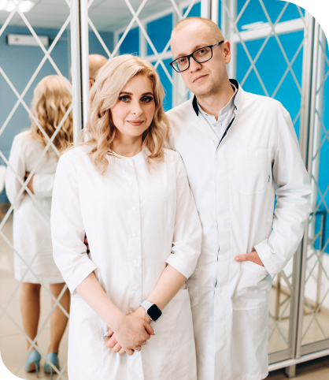

Якщо у Вас біль в грудях або Ви знайшли ущільнення
Пройдіть консультацію у досвідченого мамолога
Точна та швидка діагностикаОбладнання
Для діагностики використовуємо найкраще обладнання останнього поколінняВідповідальність
Хірургічне втручання тільки тоді, коли без цього вже не обійтисьЛікування
Лікування призначуємо за сучасними міжнародними стандартами NCCN

Дізнайтесь про клініку за 90 сек